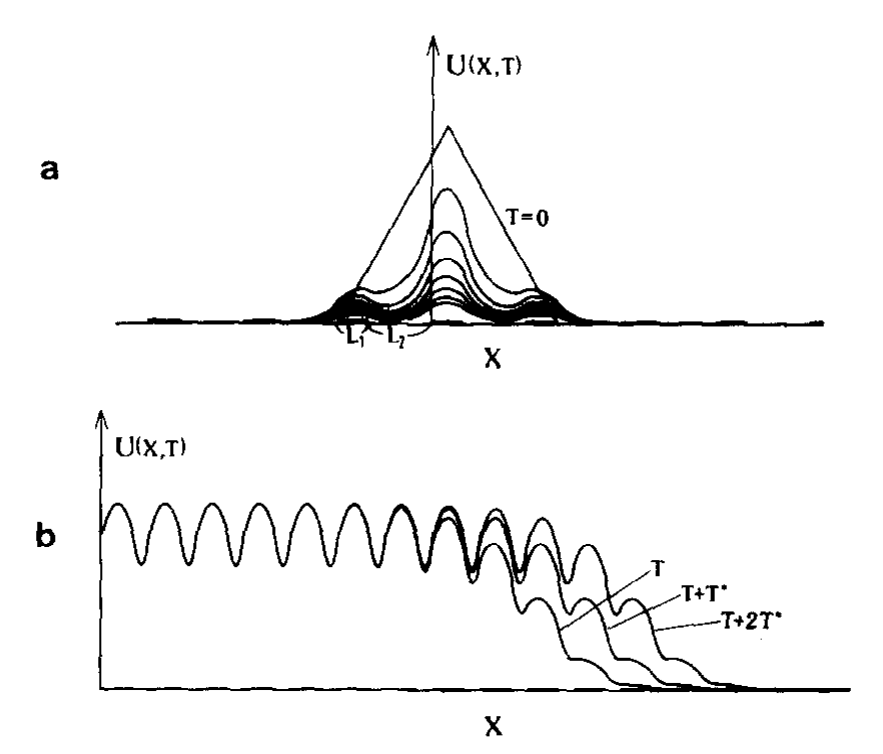

1. Background and Biological Motivation
Let \(u(t,x)\) denote population density. The model of Shigesada, Kawasaki and Teramoto [1] combines Fickian dispersal, spatially varying low-density growth, and intraspecific competition in a periodically fragmented habitat.
1.1. A One-Dimensional Patch Model
In the 1986 model [1], the population satisfies
Fickian movement with patch-dependent diffusivity \(D_i>0\); the flux matches across patch boundaries.
Positive \(r_i\) means growth when the population is rare; negative \(r_i\) means local decline.
A density-dependent loss in both patch types, independent of the sign of \(r_i\).
The competition coefficient \(\mu>0\) is constant. Let \(D_1,D_2>0\), \(r_1\geq r_2\), \(r_1>0\), and let \(L_1,L_2>0\) be the widths of the two patch types. One habitat period has length \(L=L_1+L_2\). The coefficients are
The coefficients repeat every \(L\). At each interface \(x_j\in\{kL,kL+L_1:k\in\mathbb Z\}\), density and flux are continuous:
These are the transmission conditions in [1]. In the interiors of the patches, (B1) reads \(u_t=D_i u_{xx}+r_i u-\mu u^2\). The initial population in [1] is continuous, nonnegative, single-peaked, and confined to a bounded interval:
When does a species invade a periodically fragmented habitat, and when does it become extinct?
How are the outcome and propagation speed determined by \(L_1,L_2,D_1,D_2,r_1,r_2\)? The alternating habitat is illustrated in Figure 1.
For (B1)–(B3), assume \(r_1>0>r_2\). Define
The linearization \(v_t=(D(x)v_x)_x+r(x)v\), with the same interface conditions, satisfies the following stability criterion at \(v\equiv0\):
Source: [1]. The equality \(L_1=L_{1,\mathrm{crit}}\) defines the critical boundary.
The authors interpret the stable side as invasion failure and the unstable side as invasion when rare. They explicitly distinguish this linear analysis from the nonlinear long-time behavior [1].
Periodic invaded state and traveling periodic wave
The positive stationary state considered in [1], when it exists, is a periodic function \(p\):
For a right-moving traveling periodic wave (TPW), the formulation in [1] becomes
For the localized initial distributions studied in [1], the computations report extinction on the linearly stable side and outward spreading in both directions on the unstable side. In the spreading case, the profiles approach the TPW pattern, while the population near the introduction site approaches a periodic stationary distribution.

Leading-edge dispersion relation
For the linearized equation, take the positive periodic leading-edge ansatz
The dispersion relation in [1] is
Only the branch compatible with \(g>0\) is relevant. If \(q_i\) is imaginary, the original paper imposes \(|q_i|L_i\leq\pi\); the hyperbolic factors are interpreted through their trigonometric counterparts. At \(q_i=0\), the expression is understood by continuity. On the admissible branch, write the speed curve as \(c=c(\sigma)\) and its minimum as
The paper computes this minimum from the dispersion relation [1]. Selection of \(c_{\min}\) by the nonlinear Cauchy problem is reported from numerical calculations, not established by the dispersion relation alone.
Stability of the TPW and selection of \(c_{\min}\) by localized initial data. The authors explicitly state that they did not prove TPW stability mathematically [1]; their computations support the selection of the minimum speed [1].
Connection with the later sections. The patch model separates three questions: the linear invasion threshold, the construction and speed of a periodic front, and the long-time behavior of an initially localized population. These distinctions organize the discussion of pulsating fronts, front speeds, and the Cauchy problem below.
1.2. From One Dimension to Two: Anisotropic Spreading
Kinezaki, Kawasaki, Takasu and Shigesada [6] studied two-dimensional periodic striped habitats. An illustrative two-dimensional extension of (B1) in this geometry is
with \(D(x+L)=D(x)\) and \(r(x+L)=r(x)\): the coefficients vary across the stripes but are invariant along them. The study considers two different initial configurations:
For line-supported initial data, the spreading pattern approaches a traveling periodic wave (TPW), with a front speed that can be determined analytically in the model. For a localized introduction, the invaded region expands in different directions with direction-dependent ray speeds. Their analysis shows that the asymptotic envelope can be nearly circular, oval-like, or spindle-like, depending on the parameters; in the striped configurations considered, the envelope is elongated along the stripes. Enlarging the fragmentation scale while keeping the relative patch proportions fixed increases the ray speed in every direction [6].
This distinction is important for the Cauchy problem. In a heterogeneous periodic environment, the population need not spread equally fast in every direction. The geometry of the habitat can produce anisotropic spreading: the large-time invaded region depends on the direction in which it is observed. Thus, the one-dimensional wave speed is only part of the picture; in higher dimensions, one must also understand the shape of the spreading set and the dependence of propagation speed on direction.
How do spatial periodicity and environmental heterogeneity affect invasion, propagation speed, and the shape of a spreading front?
The unknown \(u\) records population density, while spatially dependent coefficients encode the habitat. In a continuous model, this leads to an equation with periodic diffusion, drift, and reaction terms.
1.3. From Biological Mechanisms to the Equation
The one-dimensional model (B1) is a special case of equation (1) below, with \(N=1\), \(A(x)=D(x)\), \(b(x)=0\), and \(f(x,s)=(r(x)-\mu s)s\). Its positive periodic state \(p(x)\) should be distinguished from the constant state \(1\) assumed in some later front theorems.
Models random dispersal. The matrix \(A(x)\) describes how movement varies with location and direction.
Represents directed transport, for example movement biased by a current or environmental gradient.
Describes local growth and loss, including reproduction, mortality, and density dependence.
These mechanisms lead to the general reaction-diffusion-advection equation introduced below. The purpose of this page is to present known mathematical results for such models in a structured way, compare their hypotheses and conclusions, and use the resulting picture to identify well-founded open problems.
2. General Framework and Basic Assumptions
Unless a topic states otherwise, we consider a scalar reaction-diffusion equation in the whole space \(\mathbb{R}^N\):
Here \(t\) is time, \(x\in\mathbb{R}^N\) is the space variable, and \(u(t,x)\in\mathbb{R}\) is the unknown scalar state. The time interval \(I\) depends on the problem: it may be \((0,\infty)\) for an initial-value problem, a finite interval for a local-in-time problem, or all of \(\mathbb{R}\) for an entire solution such as a traveling or transition front.
Spatial periodicity
There is a lattice \(\mathcal{L}\subset\mathbb{R}^N\) such that, for every lattice vector \(k\in\mathcal{L}\),
The periodicity cell and lattice are fixed for a given equation. Time-periodic media, nonperiodic heterogeneous media, and bounded spatial domains are extensions that require separate notation or assumptions.
Diffusion matrix
For the baseline uniformly parabolic framework, assume that \(A(x)\) is a measurable, bounded, symmetric matrix and that there are constants \(0<\lambda\leq\Lambda<\infty\) such that, for almost every \(x\) and every \(\xi\in\mathbb{R}^N\),
This is uniform ellipticity. It is a useful weak baseline for divergence-form equations; classical front results often impose additional smoothness on \(A\), while degenerate or nonuniformly elliptic diffusion lies outside this baseline.
Advection field
Assume initially that \(b(x)\) is measurable and bounded. Periodicity is imposed as above. Depending on the theorem, one may need Hölder or smoother coefficients. The sign convention for the drift varies in the literature; here the term is written as \(+b(x)\cdot\nabla u\).
Reaction term
Assume that \(f(x,s)\) is measurable in \(x\), continuous in \(s\), and locally Lipschitz in \(s\), uniformly in \(x\) on bounded ranges; for classical results, continuity or Hölder regularity in \(x\) is commonly added. A standard baseline equilibrium condition is \(f(x,0)=0\). Additional equilibria, sign conditions, or monostable/KPP, ignition, and bistable assumptions are topic-specific and will be stated when used.
Solutions, existence, and regularity
- Initial-value problem: prescribe \(u(0,x)=u_0(x)\) and study the solution for later times. Well-posedness assumptions depend on the chosen solution class and the growth of \(f\).
- Entire solutions: solve the equation for every \(t\in\mathbb{R}\). Pulsating traveling fronts and transition fronts are examples; they are not, in general, specified by data at one initial time.
- Weak versus classical solutions: measurable uniformly elliptic coefficients can support weak-solution theories under suitable hypotheses. To obtain classical derivatives and apply pointwise front arguments, stronger coefficient regularity is generally needed. Local parabolic regularity gives smoothness only to the extent allowed by the coefficients and nonlinearity.
- Bounds: many front problems seek solutions between two equilibria, often normalized as \(0\) and \(1\). The bound \(0\leq u\leq1\) and the equilibrium condition \(f(x,1)=0\) are common in particular models, but are not universal assumptions for every problem on this page.
These are common baseline assumptions, not a claim that one set of hypotheses is minimal for every theorem. Each topic below must specify any additional assumptions needed for existence, uniqueness, speed formulas, stability, or asymptotic spreading.
3. Existence of Pulsating Traveling Fronts
3.1. Hypotheses
We consider equation (1) in \(\mathbb{R}^N\), with the periodicity assumptions and notation of the general framework. For the representative combustion result below, impose the following additional hypotheses.
(H1) Periodicity and regularity. The coefficients \(A,b,f\) are periodic with respect to a common lattice \(\mathcal L\). For some \(\alpha\in(0,1)\), assume, for example, \(A\in C^{1,\alpha}(\mathbb R^N)\), \(b\in C^{0,\alpha}(\mathbb R^N;\mathbb R^N)\), and \(f\) is Hölder continuous in \(x\) and locally \(C^1\) in \(s\), uniformly on bounded \(s\)-intervals.
(H2) Uniform ellipticity. There exist \(0<\lambda\leq\Lambda\) such that
(H3) Equilibria. For every \(x\in\mathbb R^N\),
(H4) Combustion nonlinearity. There is \(\theta\in(0,1)\) such that, for all \(x\in\mathbb R^N\),
These are a convenient classical set of sufficient assumptions for the stated result, not a claim of optimal minimality. KPP/monostable and bistable reactions require different hypotheses.
3.2. Definition
Let \(e\in\mathbb S^{N-1}\) and \(c>0\). A pulsating traveling front of (1) in direction \(e\), with speed \(c\), is an entire solution \(u\in C^{1,2}(\mathbb R\times\mathbb R^N)\), \(0<u<1\), for which there exists a profile \(\Phi\) satisfying
with \(\Phi\) nonincreasing in \(z\) and
Equivalently, \(\Phi\) is periodic in its first variable and connects the state \(1\) behind the front to the state \(0\) ahead of it. The function \(u\) is defined for every \(t\in\mathbb R\), so a pulsating front is an entire solution, not merely a solution of an initial-value problem.
3.3. Existence Theorem
Theorem 1 (Berestycki–Hamel [3], combustion case). Assume (H1)–(H4) in the periodic whole-space setting above. For each \(e\in\mathbb S^{N-1}\), there exist a speed \(c_e>0\) and a profile \(\Phi_e\) such that
For the combustion problem covered by [3], the propagation speed is unique; the front profile is unique up to translation under the theorem's hypotheses.
Reference [3]. H. Berestycki and F. Hamel, “Front propagation in periodic excitable media,” Communications on Pure and Applied Mathematics, 55(8) (2002), 949–1032. https://doi.org/10.1002/cpa.3022.
For a periodic biological-invasion model, see also H. Berestycki, F. Hamel and L. Roques, “Analysis of the periodically fragmented environment model: II—Biological invasions and pulsating travelling fronts,” Journal de Mathématiques Pures et Appliquées, 84(8) (2005), 1101–1146 [5].
3.4. KPP / Monostable Reactions
For a KPP-type nonlinearity, the unstable state \(u=0\) determines the leading-edge growth. A standard set of assumptions is
together with the periodicity and regularity hypotheses from the general framework. More general monostable nonlinearities require \(f(x,s)>0\) for \(0<s<1\), but need not satisfy the KPP upper bound in (5).
Theorem 2 (KPP-type fronts [3, 4]). Under the hypotheses of the periodic KPP theory, for each direction \(e\in\mathbb S^{N-1}\), there is a minimal speed \(c^*(e)>0\) such that pulsating fronts exist for \(c\geq c^*(e)\), and no such front exists for \(0<c<c^*(e)\). The minimal speed admits a spectral variational characterization; see Section 2.
For the broader monostable class, Berestycki–Hamel [3] prove, under their hypotheses, that the admissible speeds form a closed half-line bounded from below. The precise assumptions are important: the KPP spectral formula cannot be automatically transferred to every monostable nonlinearity.
3.5. Bistable Reactions: Existence Depends on the Medium
A typical bistable reaction has two stable equilibria \(0\) and \(1\), separated by an unstable intermediate state. In a spatially periodic medium, a representative assumption is
with a bistable sign change in \(s\in(0,1)\), uniformly in \(x\) in the specific model under consideration. The sign-change condition, coefficient regularity, and dependence on the spatial period must be stated precisely for each theorem.
Theorem 3 (Ding–Hamel–Zhao [7], representative results). For classes of spatially periodic bistable equations satisfying the assumptions in [7], pulsating fronts are proved to exist in several regimes, in particular for sufficiently small or sufficiently large spatial periods under the corresponding additional hypotheses. The paper also studies the set of periods admitting non-stationary fronts and proves the existence of stationary fronts or non-stationary partial fronts at boundary periods. These results do not assert existence for every periodic bistable equation at every period.
In contrast, Xin [2] gives a one-dimensional bistable example with periodic coefficients for which a traveling front does not exist and propagation is quenched. Thus, unlike the KPP setting, there is no universal minimal-speed formula that by itself classifies all bistable cases.
For a general spatially periodic bistable nonlinearity satisfying the standard bistable sign and stability conditions, find a necessary-and-sufficient criterion for the existence of a non-stationary pulsating front, in terms of the reaction and the spatial heterogeneity. In particular, characterize when a given period supports a propagating front rather than only a stationary or partial front.
Status note: this is a literature-motivated open direction, not a claim that every special case is unresolved. Ding–Hamel–Zhao [7] establish substantial period-dependent existence results and explicitly discuss the difficulty of a general existence/nonexistence criterion.
4. Spreading Speeds and Minimal Speeds
Main question How fast does an invading solution spread, and can the minimal speed of a pulsating front be computed from a linear eigenvalue problem?
For KPP-type reactions, the leading edge of the invasion is governed by the equation linearized near the unstable state. In periodic media, the relevant linear operator has periodic coefficients. Its principal eigenvalue leads to a variational formula for the minimal front speed. This is a central distinction between KPP-type problems and general monostable or bistable equations, where linear determinacy need not hold in the same way.
4.1. Berestycki, Hamel & Nadirashvili (2005) — The Periodic KPP Speed Formula
This paper proves that the minimal speed of pulsating fronts for KPP-type equations in periodic media is given by a variational formula involving principal eigenvalues of suitable linear operators. It also studies how the speed depends on the geometry of the domain and on reaction, advection, and diffusion coefficients, and connects front speeds with asymptotic spreading speeds for the Cauchy problem.
4.2. Berestycki, Hamel & Roques (2005) — Minimal Speed in Biological Invasion
This paper also belongs here: besides proving existence of pulsating invasion fronts, it characterizes the minimal speed for the periodic biological model. It is a useful bridge between the abstract spectral formula and an applied invasion model.
4.3. Xin (1993) — Effective Speeds and Propagation Blocking
Xin's paper is relevant to the broader propagation question: when a traveling wave exists, its effective speed describes the propagation of suitable initial data. For bistable reactions, sufficiently strong heterogeneity can instead lead to the failure of wave propagation. Thus, the minimal-speed picture for KPP fronts should not be assumed to apply unchanged to all reaction types.
4.4. Key Distinction
- Minimal front speed: the smallest speed for which a pulsating traveling front exists in a given direction.
- Asymptotic spreading speed: the speed describing the large-time expansion of solutions from suitable initial data.
- In periodic KPP settings these quantities are closely linked and can be characterized spectrally; in other reaction regimes, the relationship requires separate hypotheses and results.
5. Cauchy Problems, Directional Speeds, and Spreading Sets
This section concerns solutions of the initial-value problem
For compactly supported, nontrivial initial data, a central question is how rapidly the invaded region expands. Under suitable monostable/KPP hypotheses, one can define a directional spreading speed \(w(e)\) by the asymptotic behavior along rays \(x\sim cte\): behind the speed the solution approaches the invaded state, while ahead of it the solution approaches \(0\).
5.1. KPP: Minimal Front Speed and Spreading Speed
For a periodic KPP equation, let \(\lambda(e,\sigma)\) denote the principal eigenvalue associated with the exponentially tilted linearized periodic operator in direction \(e\), with \(\sigma>0\). The minimal pulsating-front speed is given by
Under the KPP hypotheses, the minimal front speed agrees with the asymptotic spreading speed in the same direction. This is the linear-determinacy property proved in the periodic framework of Berestycki–Hamel–Nadirashvili [4]. The exact definition of \(\lambda(e,\sigma)\) depends on the convention for the drift term and the tilted operator; it should be taken from the corresponding paper when using the formula for a specific equation.
5.2. From Directional Speeds to a Spreading Set
Directional speeds describe one ray at a time. The full large-time geometry is encoded by the asymptotic spreading set \(W\). In a standard convex spreading regime, it can be represented as the intersection of half-spaces
In periodic KPP settings, the Freidlin–Gärtner relation expresses the speed observed in a direction \(e\) in terms of planar propagation speeds in other directions:
These formulas make the geometric role of anisotropy explicit: the spreading set need not be a ball, and the speed of expansion depends on direction. Formula (10) is stated here for the classical periodic KPP framework; more general reactions and initial supports require additional hypotheses and may involve a different formula.
5.3. Hamel & Rossi (2021) — Spreading Speeds for General Initial Supports
This work studies large-time dynamics for bounded solutions with possibly unbounded initial support. It introduces notions describing bounded and unbounded directions of the initial support, derives directional spreading-speed formulas, and describes asymptotic level-set geometry. It also gives counterexamples showing that assumptions on the initial support and reaction cannot be omitted indiscriminately [8].
5.4. Guo, Hamel & Rossi — Spreading Speeds and Spreading Sets
This work studies directional speeds and asymptotic invasion geometry in periodic media for a broad class of reaction terms and general initial supports. It connects the geometry of the initial support to the directions in which invasion can occur [9].
For spatially periodic equations outside the KPP class, determine which structural assumptions on the reaction and on a general unbounded initial support guarantee a sharp Freidlin–Gärtner-type formula for the spreading set.
Scope note: general-reaction results are already available, including [8] and [9]. Any remaining open question must isolate a precise class not covered by those theorems.
References cited on this page
- Shigesada, N., Kawasaki, K. & Teramoto, E. (1986). Traveling periodic waves in heterogeneous environments. Theoretical Population Biology, 30(1), 143–160. doi:10.1016/0040-5809(86)90029-8.
- Xin, J. X. (1993). Existence and nonexistence of traveling waves and reaction-diffusion front propagation in periodic media. Journal of Statistical Physics, 73, 893–926. doi:10.1007/BF01052815.
- Berestycki, H. & Hamel, F. (2002). Front propagation in periodic excitable media. Communications on Pure and Applied Mathematics, 55(8), 949–1032. doi:10.1002/cpa.3022.
- Berestycki, H., Hamel, F. & Nadirashvili, N. (2005). The speed of propagation for KPP type problems. I: Periodic framework. Journal of the European Mathematical Society, 7(2), 173–213. doi:10.4171/JEMS/26.
- Berestycki, H., Hamel, F. & Roques, L. (2005). Analysis of the periodically fragmented environment model: II—Biological invasions and pulsating travelling fronts. Journal de Mathématiques Pures et Appliquées, 84(8), 1101–1146. doi:10.1016/j.matpur.2004.10.006.
- Kinezaki, N., Kawasaki, K., Takasu, F. & Shigesada, N. (2003). Modeling biological invasions into periodically fragmented environments. Theoretical Population Biology, 64(3), 291–302. doi:10.1016/S0040-5809(03)00091-1.
- Ding, W., Hamel, F. & Zhao, X.-Q. (2017). Bistable pulsating fronts for reaction-diffusion equations in a periodic habitat. Indiana University Mathematics Journal, 66(4), 1189–1265. doi:10.1512/iumj.2017.66.6070.
- Hamel, F. & Rossi, L. (2021). Spreading speeds and spreading sets of reaction-diffusion equations. arXiv:2105.08344.
- Guo, H., Hamel, F. & Rossi, L. Reaction-diffusion equations in periodic media: spreading speeds and spreading sets. arXiv:2609.18795.
Known Results, Limitations, and Open Problems
For each research question, the next stage of this project is to develop three connected parts:
- Known results: precise theorem statements, including assumptions, conclusions, and references to the original sources.
- Limitations and relations: compare what different results cover, which hypotheses differ, and what follows from one theorem but not another.
- Open problems: formulate specific, mathematically meaningful questions suggested by these comparisons, and verify their status through the literature before labeling them open.
This is a developing research map, not yet an exhaustive survey. The goal is to use a careful synthesis of existing results to reveal genuine gaps and well-formulated open problems. Further modules will cover uniqueness and stability, bistable fronts, multidimensional propagation, and space-time periodic media.